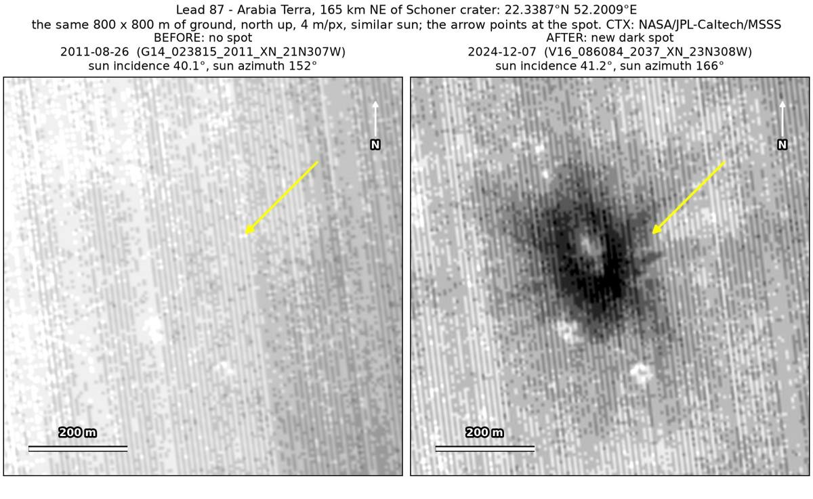
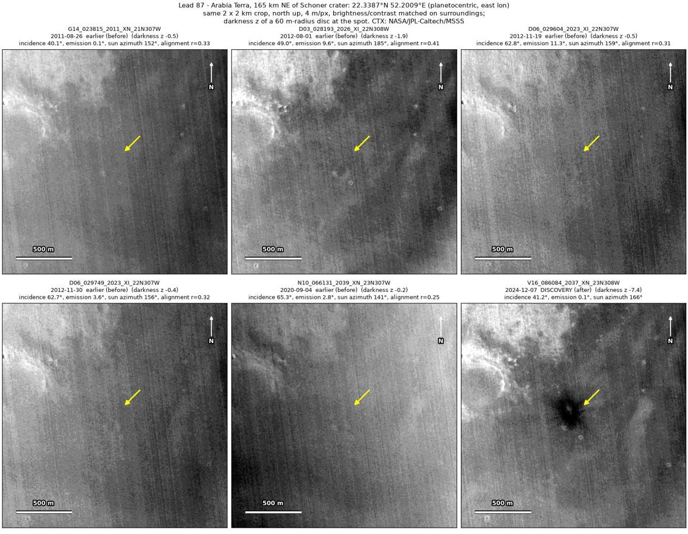
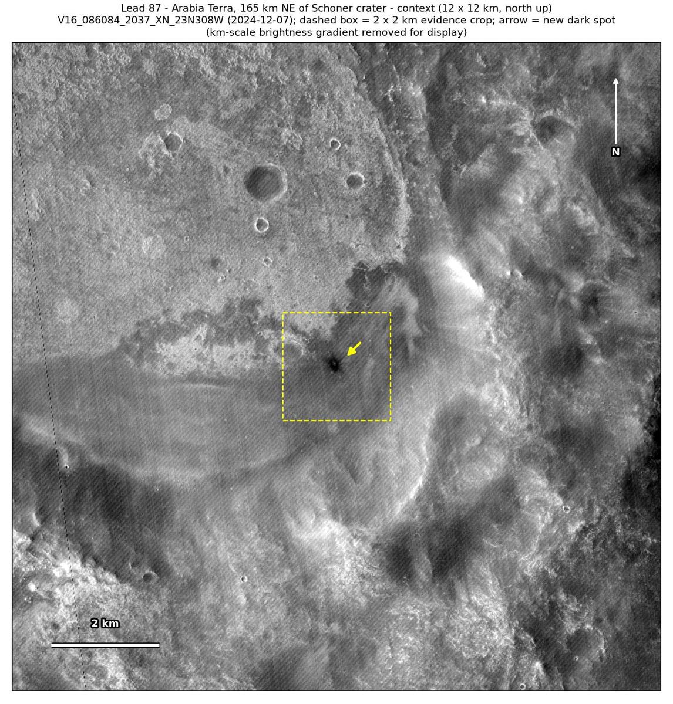

Professor of Mathematics
Paata Ivanisvili
Department of Mathematics, University of California, Irvine

← Possible new impact sites on Mars
Candidate 87: Arabia Terra, 165 km north-east of Schoner crater
Promising · roughly 65%

What changed. A dark spot about 150 to 200 m across, with rays and a small bright dot near its centre, appeared on smooth plains in Arabia Terra, 165 km north-east of Schoner crater, between September 2020 and December 2024, in one CTX image so far.
Why it may be a new impact. Five earlier images from 2011 to 2020 show no spot there, one of them, of August 2011, under the same sun as the December 2024 image, and the aligned before-and-after difference is deepest at the spot and nowhere else in the 2 × 2 km area around it; dark rays around a small bright centre are how the blast zone of a small new crater looks, and are hard to explain as an image defect or a dust devil.
- Location
- 22.339° N, 52.201° E
- Absent
- 26 August 2011, 1 August 2012, 19 November 2012, 30 November 2012 and 4 September 2020
- Present
- 7 December 2024
- Size
- Rayed dark spot about 150 to 200 m across (188 × 222 m), with a bright central dot
- Confidence
- Promising candidate: roughly 65% likely to be a new impact.
- Caveat
- Only one image shows it, so an image defect cannot be fully ruled out, though rays and a bright centre are hard to make that way and the image’s striping is even across the area. No nearby feature could be used to check that the earlier images would have shown such a spot. No image from the high-resolution HiRISE camera covers it; the nearest ends 35.0 km away. Like every candidate here, it is unconfirmed: see the caveat.

